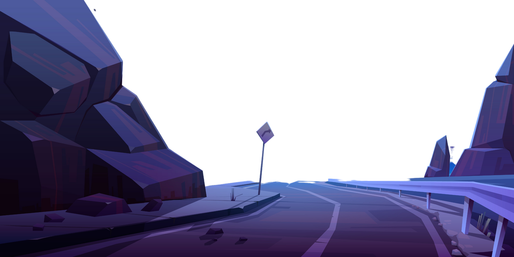
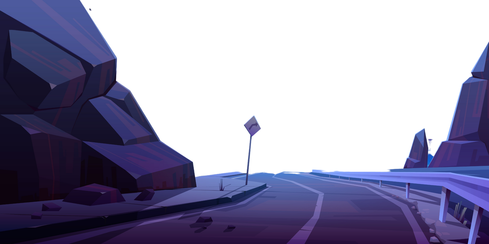
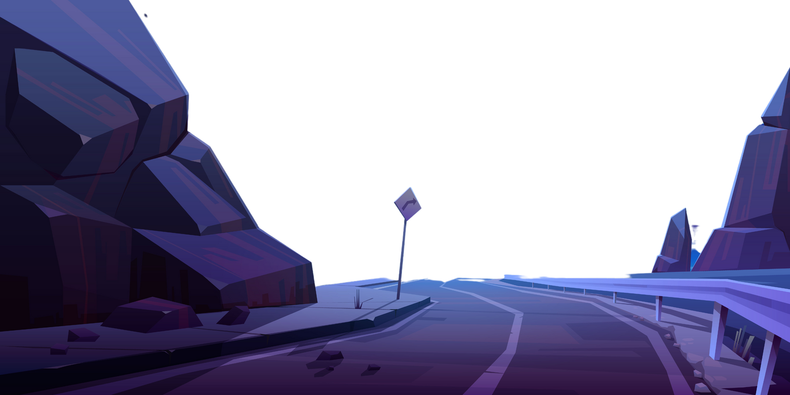
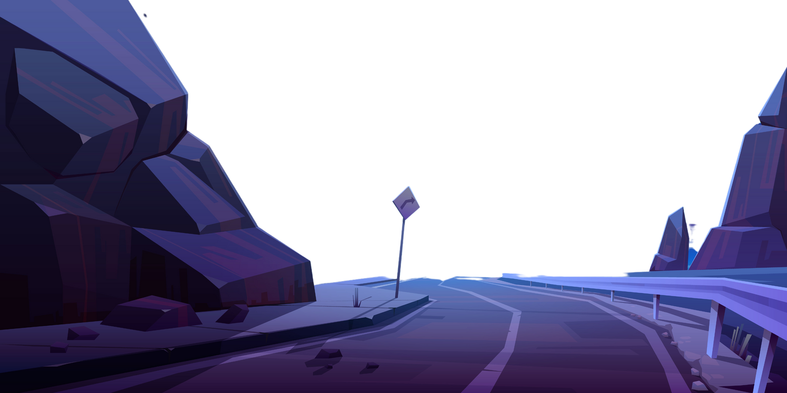

Explore

Explore

Explore

Explore

When done well, parallax effects can make flat pixels come to life, creating a sense of depth and dimensionality. Parallax scrolling is a popular trend in website design because it can make a design feel more exciting or immersive.
Parallax effects involve a website’s background moving at a different speed than the foreground content. This visual technique creates an illusion of depth which leads to a faux-3D effect upon scroll. While parallax effects can make websites feel more interactive and engaging, it’s important to note that excessive movement within parallax effects can cause harm for those with vestibular disorders. The illusion of movement and depth can cause dizziness or disorientation. If you use these websites as inspiration for your own, follow these guidelines for accessible parallax effect design:
Keep the number of parallax effects to a minimum Constrain movement effects within a small area of the screen Include options for users to turn off parallax effects Don't let your effects distract users from important information.
While many restaurants throw up a basic restaurant website or rely on social media platforms to share their menu and business information, Dockyard Social goes beyond the bare minimum. The Scottish purveyor of comfort food and beverages packs various visual effects into their single page website, starting with header text in the hero section that breaks apart upon scroll.
Heco Partners will pop up again later in this blog, as they’re well versed in taking visuals into unexpected and compelling directions. This web design they created for the data analytics company OnCorps, begins with a scattered flock of dots that come together into a bell curve, representing so well what they do with data. This site makes great use of parallax scrolling effects with a layout full of floating shapes and animations.
From the lightly shifting text, to the numerous parallax effects touching its visual components, everything comes together for an effortless user experience. The designer behind this site, Jonathan Morin, interjects humor with playful remarks like “78% of my clients say I’m a genius. The other 22% say I’m a sexy genius.” This along with a number of other funny lines makes this more than just a portfolio of his work, but rather a representation of who he is.